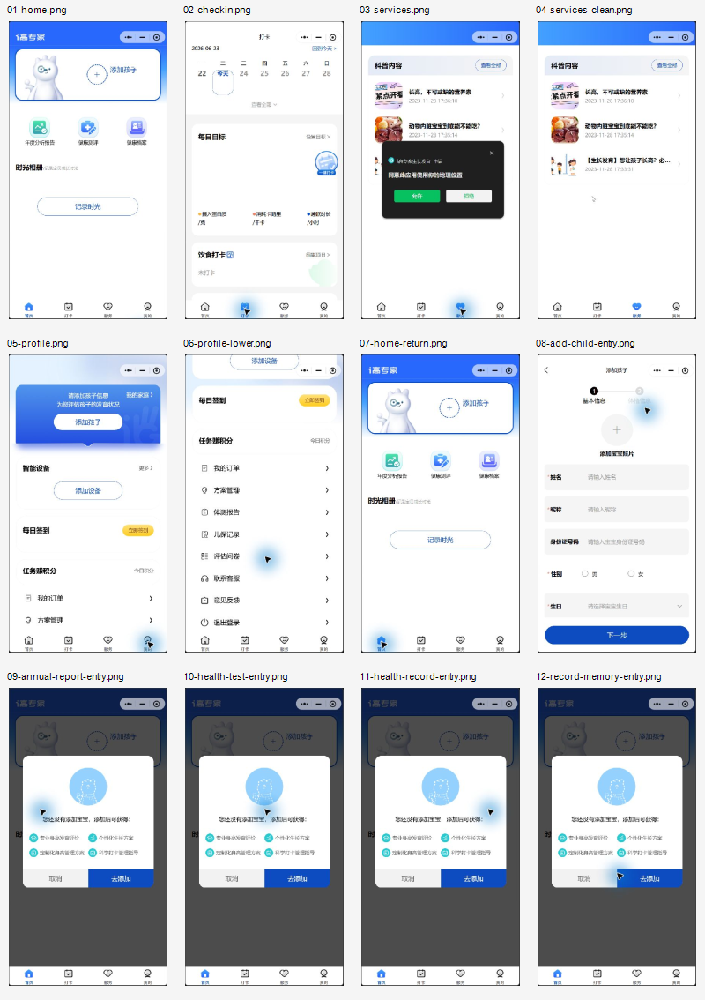

如果身份证号不是强制，建议改为非必填；如果强制，必须说明用途和数据保护方式。
i高专家小程序项目分析报告
一、项目目标
本项目围绕“i高专家生长发育”小程序完成三个交付：使用 H5 复刻主要界面，使用 HTML 生成项目分析报告并转换为 PDF，将工程同步到 Thunder-Agent 的 GitHub 仓库并发布远程可访问地址。
12关键截图证据
4主导航页面
5高优先级建议
1静态 H5 工程
二、审计范围
审计覆盖首页、打卡、服务、我的、添加孩子表单，以及年度分析报告、健康测评、健康档案、记录时光等入口的未添加孩子状态。审计过程中没有填写儿童敏感信息，没有允许定位，没有提交表单，没有上传、支付或删除数据。
三、截图证据总览

四、步骤健康度
| 步骤 | 页面/状态 | 健康度 | 说明 |
|---|---|---|---|
| 1 | 首页 | 中等 | 视觉亲和，核心入口清晰，但空状态说明不足。 |
| 2 | 打卡页 | 中等偏弱 | 有每日目标和饮食打卡，但无孩子/无目标时缺少下一步。 |
| 3 | 服务页定位弹窗 | 弱 | 刚进入服务页即请求定位，授权时机偏早。 |
| 4 | 服务页内容 | 中等 | 内容以科普文章为主，与“服务”命名有预期差。 |
| 5 | 我的页 | 较好 | 添加孩子、设备、签到、积分等入口完整。 |
| 6 | 我的页下半部分 | 较好 | 订单、方案、报告、儿保记录、客服、反馈等支撑入口齐全。 |
| 7 | 添加孩子 | 弱 | 首屏要求儿童身份证号，但缺少用途和隐私说明。 |
| 8 | 报告/测评/档案/相册入口 | 中等 | 有阻断弹窗，但多个入口使用同一文案，功能价值不够具体。 |
五、主要发现
1. 首次体验被“先添加孩子”卡住
首页绝大多数核心功能都依赖添加孩子，但页面没有充分解释添加孩子后能获得什么，也没有展示可先体验的轻量路径。用户会在“被要求交资料”前缺少明确收益感。
2. 儿童身份证号字段信任成本高
添加孩子页要求照片、姓名、昵称、身份证号、性别、生日。对儿童健康产品而言，身份证号是高敏感信息，必须说明用途、保存方式、是否必填和隐私保护措施。
3. 阻断弹窗泛化
年度报告、健康测评、健康档案、记录时光都使用同一“添加宝宝后可获得”弹窗。这样能降低开发成本，但会削弱每个功能的独立价值说明。
4. 定位授权请求过早
服务页进入即弹出定位授权，而当前服务页主要显示科普内容。用户没有看到位置权限的直接价值，容易拒绝或降低信任。
5. 打卡页空状态引导不足
打卡页出现每日目标、一键打卡和饮食打卡，但没有孩子信息时，页面没有明确说明要先设置什么、为什么现在不能完成完整打卡。
六、优先级建议
在“添加孩子”附近说明添加后可生成成长档案、测评结果和身高管理建议。
报告、测评、档案、相册分别说明需要哪些信息、添加后会看到什么结果。
等用户点击附近机构、线下服务或预约入口时，再解释并请求定位。
提示“先添加孩子并设置成长目标”，弱化或禁用一键打卡。
七、可访问性风险
- 部分浅灰小字对比度偏低，例如“记录宝贝成长时光”和文章时间。
- 图标按钮较多，截图无法证明是否有可读标签，需要开发工具继续检查。
- 弹窗卖点文字较小，老年家长或低视力用户阅读压力较大。
- 仅凭截图无法确认读屏顺序、键盘焦点和触控目标尺寸。
八、H5 复刻说明
H5 工程以静态方式复刻小程序主要界面，包含底部导航切换、添加孩子表单页、未添加孩子弹窗、服务页定位弹窗模拟和提示 Toast。复刻不连接真实后端，不保存儿童信息，不调用真实定位，不产生外部数据提交。